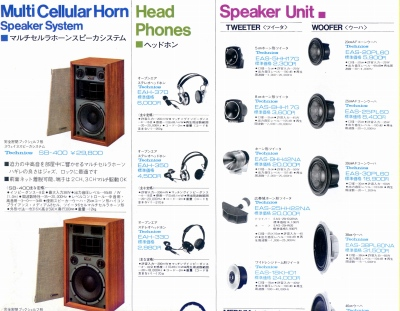
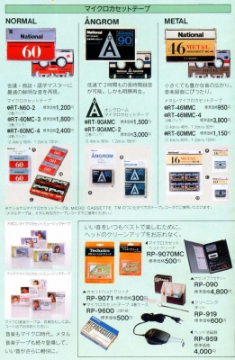

PANASONIC（ パナソニック） カタログギャラリー
(カタログ画像をクリックすると原寸大のPDFファイルが開きます）
�@1973年7月スピーカーカタログ
システムスピーカー、スピーカーユニット、ヘッドフォンが一体となったカタログ。

�A1974年11月ヘッドフォンカタログ
密閉型、オープンエア型、４チャンネル機、コンデンサー型とフルラインナップ時代のカタログ。
�B1976年6月のスピーカーユニット・ヘッドフォンカタログ
�C1978年4月NEW
PRODUCTS
生録対応のEAH-720/710
�D1982年7月アクセサリーカタログ

�E1985年11月総合カタログ
�F1986年8月セールスマン専用カタログ
オークションでたまに見かけるセールスマンや販売店向けのカタログ。一定時点のほぼ全製品が載っているが、画像が小さく、スペックもおざなり。サイズ的に葉書大なので、しかたない。
�G1987年7月ヘッドフォンカタログ
�H1991年6月ヘッドフォンカタログ
パナソニックブランドへ移行後のカタログ
�I1994年11月総合カタログ
パナソニックのインデックスへ